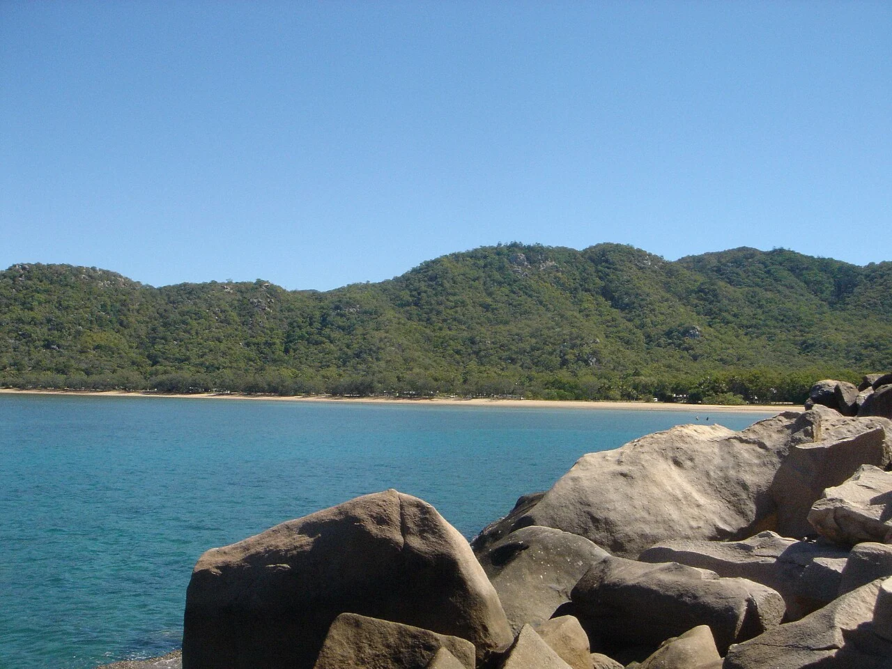

Geoffrey Bay — Magnetic Island
Magnetic Island, Queensland, Australie · snorkeling, baignade

Baie à grande plage de sable sur Magnetic Island, à 8 km de Townsville, devant Arcadia. L’épave du voilier Moltke repose dans la baie. Un parcours de snorkeling part de Marine Parade, à environ 400 m du rivage, avec quatre bouées numérotées : on y voit des bénitiers géants et, par temps clair, l’épave. Le site de tourisme de l’île décrit un environnement idéal pour nager toute l’année.
- Lieu
- Magnetic Island, Queensland, Australie
- Niveau
- Variable selon les conditions
- Activités
- snorkeling, baignade
- Type d'eau
- Mer / océan
- Coordonnées
- -19.15, 146.87 (position approximative du secteur)
Dangers à connaître
- Saison des méduses de novembre à avril : porte une combinaison anti-méduses (stinger suit).
- Ne te tiens pas debout sur le corail et ne t’accroche pas aux bouées du parcours.
- Le snorkeling peut être fatigant même par eau calme : prudence si tu débutes ou si tu as un souci de santé.
Le conseil d'Ocean Buddy
Mets une combinaison anti-méduses de novembre à avril. L’eau se trouble pendant et après les vents de sud-est, et les marées très hautes ou très basses autour des nouvelles et pleines lunes sont à éviter.
Ouvrir dans Ocean Buddy Télécharger sur l'App Store
Source : Fiche Ocean Buddy · décembre 2026 · d’après This Is Magnetic Island et Wikipédia (Geoffrey Bay, Magnetic Island) · à vérifier localement.